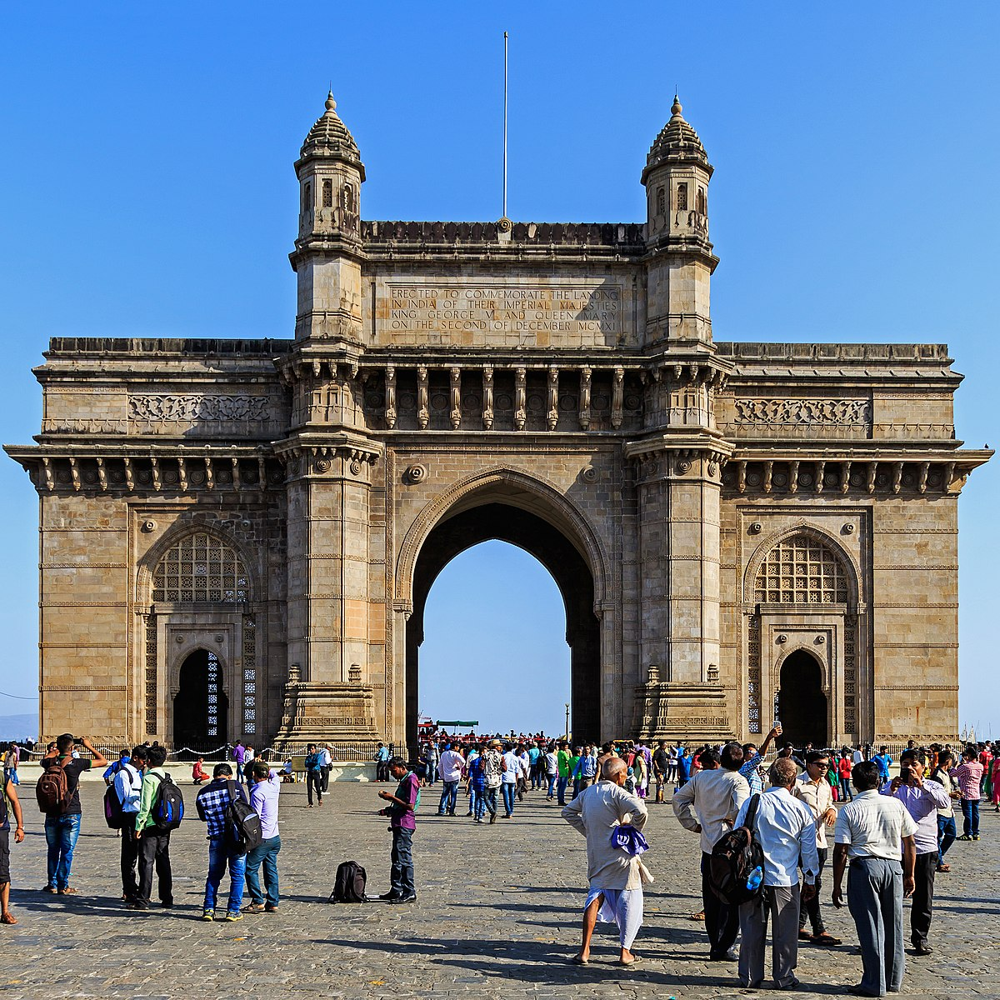
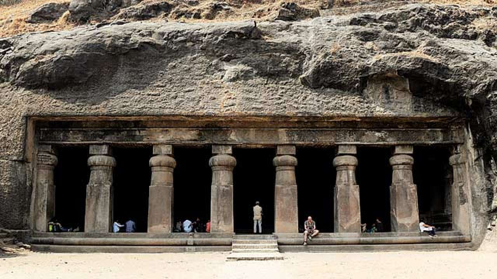
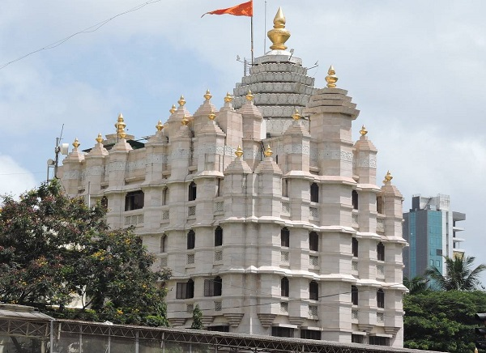

Insearch Outdoors
Home
(current)
About Us
Tours
Wildlife
Local Treks
Birding
Gallery
Register
Login
Search
Best Locations in Mumbai

India Gate
#1 in Best Places to Visit in Mumbai
The Gateway of India is an arch-monument built in the early twentieth century in the city of Mumbai, in the Indian state of Maharashtra. It was erected to commemorate the landing in December 1911 at Apollo Bunder, Mumbai (then Bombay) of King-Emperor George V and Queen-Empress Mary, the first British monarch to visit India. At the time of the royal visit, the gateway was not yet built, and a cardboard structure greeted the monarch. The foundation stone was laid in March 1913 for a monument built in the Indo-Saracenic style, incorporating elements of 16th-century Gujarati architecture. The final design of the monument by architect George Wittet was sanctioned only in 1914, and construction was completed in 1924. The structure is a triumphal arch made of basalt, which is 26 metres (85 feet) high. After its construction the gateway was used as a symbolic ceremonial entrance to British India for important colonial personnel. It has been called a symbol of "conquest and colonisation" commemorating British colonial legacy. The gateway is also the monument from where the last British troops left India in 1948, following Indian independence. It is located on the waterfront at an angle, opposite the Taj Mahal Palace and Tower Hotel and overlooks the Arabian Sea. Today, the monument is synonymous with the city of Mumbai, and is amongst its prime tourist attractions. The gateway is also a gathering spot for locals, street vendors, and photographers soliciting services. It holds significance for the local Jewish community as it has been the spot for Hanukkah celebrations, with the lighting of the menorah, since 2003. There are five jetties located at the gateway, of which two are used for commercial ferry operations.
Sanjay Gandhi National Park
#2 in Best Places to Visit in Mumbai
Squeezed between the two suburbs of Mumbai and Thane, Sanjay Gandhi National Park is ideal for picnics and weekend getaways offering respite from the chaos and buzz of the city. Famed to be one the most liked national parks, visitors throng in thousands to spot Leopards, Macaques, Boars, Lions, Flying fox, Kingfisher, Sunbirds and a significant number of butterflies here. Kanheri caves, which are more than two thousand years old are also a major tourist attraction inside the park premises. The caves have been carved out of the rocky cliffs. The Sanjay Gandhi National Park, previously known as the Borivali National Park covers approximately 20% of Mumbai's geographical area and is home to a staggering thirteen hundred species of flora and more than five hundred species of fauna respectively. Covering an area of 104 square kilometers, it is one of Asia's most visited National Parks with over 2 million visitors every year. The park is also said to be the largest park in the world located within city limits. There are two artificial lakes within the forest thriving with crocodiles and migratory birds all year. The lakes supply drinking water to the city. The park was first introduced in 1974 and helps to have a change from the usual sights, attractions, and rush of the big city. The Sanjay Gandhi National Park is known for its evergreen dense forests, bird population, butterflies, and the small population of tigers.

Elephanta Caves
#3 in Best Places to Visit in Mumbai
A UNESCO World Heritage Site, Elephanta Caves is a specimen of rock-cut art and architecture from the times of medieval India. The caves are located on the Elephanta or Gharapuri island which is situated at a distance of 11 km from the city of Mumbai. Natively known as Gharapurichi Leni, the Elephanta Caves that exist today are ruins of what were once elaborately painted artworks. It also provides an amazing view of the Mumbai skyline. You can reach the Elephanta Caves via a ferry ride from Gateway of India. This collection of cave temples dates back to 5th to 7th centuries and most of them are dedicated to Lord Shiva. There are two groups of alcoves in the site of the Elephanta Caves, the first is a large group of five Hindu caves and the second one is a smaller group of two Buddhist caves. The Hindu caves contain the stone sculptures representing the Shaiva Hindu sect. The caves are an expression of art and a number of important imageries are sculpted here, which include 'Trimurti' or three-headed Shiva, 'Gangadhar' which is a manifestation of the river Ganga as she descends to the earth and 'Ardhnareshwar', which is a representation of Shiva and Parvati in the same body. In addition to being an important heritage site, the Elephanta Caves are also an unlikely trekking destination.

Siddhivinayak Temple
#4 in Best Places to Visit in Mumbai
The Siddhivinayak Temple in the Prabhadevi area is a revered shrine dedicated to Lord Ganesha and is one of the most significant and frequented temples in Mumbai. This temple was built in the year 1801 by Laxman Vithu and Deubai Patil. The couple did not have any children of their own and decided to build the Siddhivinayak temple so as to fulfil the wishes of other infertile women. Interestingly, the statue of Lord Ganesha here is believed to be self-manifested and grants wishes. The Temple has a small sanctum housing the idol of Shri Ganesha, which is about two and a half feet wide and made out of a single piece of black stone. The temple has attained a popular status not only because it is believed that the Ganesha in the temple is especially revered, but also because of its popularity with Film stars and the bigwigs of the industry. It is also the richest temple in Mumbai as it begets INR 100 Million in donations each year from devotees across the world.